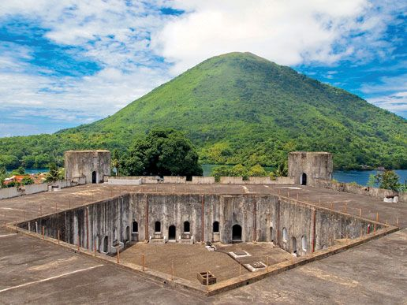

1. Arsitektur Unik Segi Lima
Benteng Belgica terletak di Banda Neira, Maluku Tengah, dan dibangun oleh bangsa Belanda pada abad ke-17. Keunikan utama dari cagar budaya ini adalah bentuk bangunannya yang menyerupai **segi lima (pentagon)** jika dilihat dari udara. Benteng ini dibangun di atas perbukitan untuk mendapatkan pandangan luas ke segala arah, menjadikannya pusat pertahanan yang sangat strategis pada zamannya.

2. Penjaga Jalur Perdagangan Pala
Pada masa kolonial, Kepulauan Banda adalah satu-satunya tempat di dunia yang menghasilkan buah pala. Benteng Belgica didirikan oleh VOC dengan tujuan utama untuk mengawasi gerak-gerik kapal serta memonitor perdagangan rempah-rempah dari monopoli bangsa barat. Di dalam benteng ini terdapat menara-menara pengawas yang kokoh dan ruang-ruang bawah tanah yang masih terjaga keasliannya hingga hari ini.
Pentingnya Pelestarian
Sebagai salah satu cagar budaya nasional, Benteng Belgica tidak hanya menjadi objek wisata sejarah, tetapi juga simbol penting dari kaya dan strategisnya posisi kepulauan Indonesia dalam kancah sejarah perdagangan dunia.